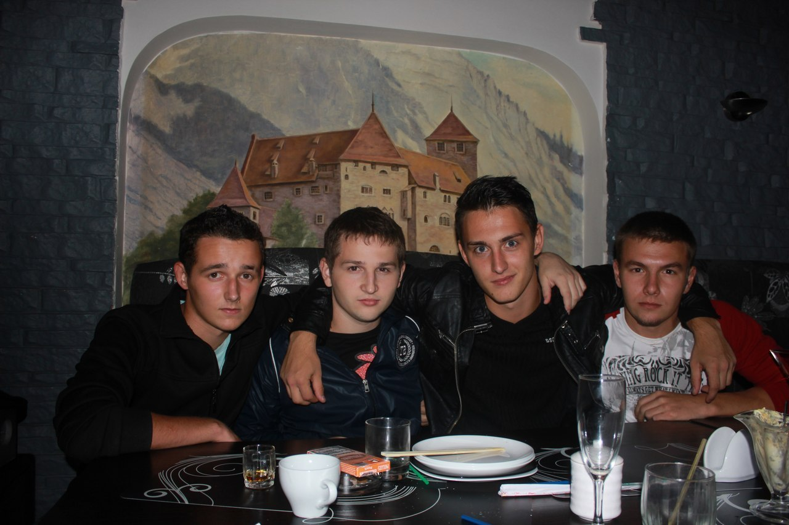
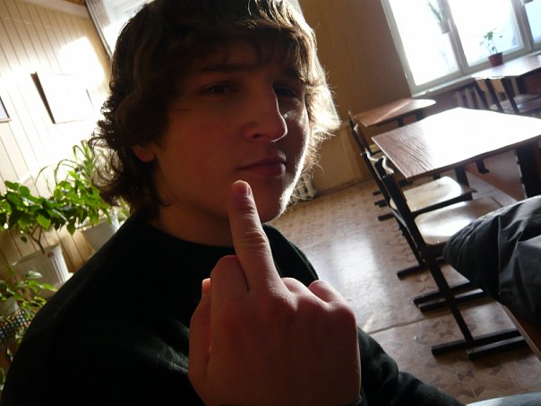

Личный блог
оперуполномоченного ОЭБиПК УМВД России по г. Саратову лейтенанта полиции Суркова Максима Николаевича
Во внеслужебное врем (личное), Максим Николаевич Сурков
поддерживает теплые, дружеские и доверительные отношения с личным составом УМВД
России по г. Саратову.
Посещает общественные и культурные мероприятия, проводимые
на территории города Саратова вместе с начальником ОЭБиПК УМВД России по г.
Саратову – Васильевым Виталием Васильевичем, бывшим начальником УМВД России по
г. Саратову, а в настоящее время заместителем начальника УМВД по оперативной
работе – Соловьевым Алексеем Николаевичем.
Посещает баню и сауну совместно с председателем Саратовской
областной думы – Романовым Александром Сергеевичем.
Совместно отмечает праздники в кругу родных и близких, с
приглашением именитых гостей, таких как: председатель правительства Саратовской
области - Бусаргин Роман Викторович, заместитель председателя правительства -
Грибов Роман Викторович.
Семейным и дружеским кругом любит собираться на даче, в
коттедже, лесах, распивая спиртные напитки и жаря мясо на мангале.

Максим Николаевич помнит и чтит своих знакомых с детства,
школьной скамьи, обучения в Университете.
Будучи в состоянии алкогольного опьянения Максим становится
душой компании, собирает всех вокруг себя. Предлагает различные игры, такие
как: бутылочка, верю не верю, дурак на раздевание.
Больше всего в личное время Максим Николаевич предпочитает
распивать дешевые спиртные напитки, на подобии «Пиво жигулевское».
Также будучи в состоянии алкогольного опьянения Максим
нелепо демонстрирует приемы из рукопашного боя, пародируя главного героя
мультфильма «Кунг фу панда».
Максим способен выпить больше всех алкогольных напитков, и
принести добавки, когда его компания уже три раза проблевалась.
Нередки случаи употребления спиртных напитков на корпоративах
среди сотрудников ОЭБиПК УМВД России по г. Саратову, когда Максим становится
инициатором посиделок, а на утро не способен проснуться, что является причиной
опоздания на службу, либо уходит на больничный.
Детство и юношество Суркова Максима Николаевича

Для Суркова Максима Николаевича семья – на первом месте. В быту
старается поддержать семейный очаг, с трепетной заботой относится к семейным
традициям и ценностям. Встречает семейные праздники в самом близком кругу – семье.